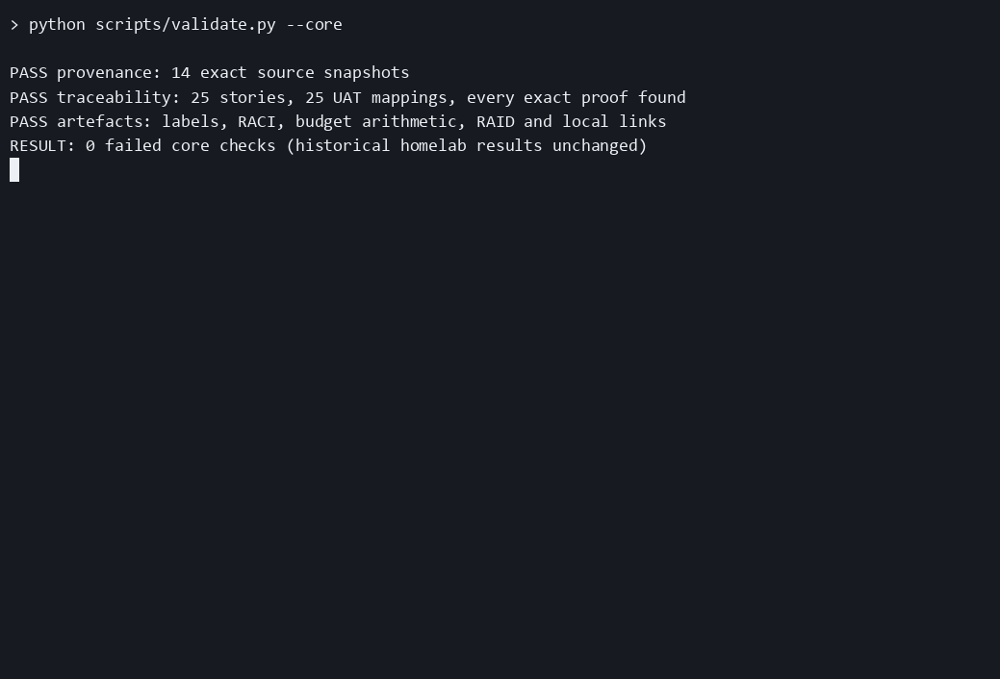

25
Stories linked to proof
Given/When/Then criteria with an exact transcript assertion and scope limit.
Inspect traceabilityA fictional 15-person office rollout built around real IT Support Homelab evidence. Explore the plan, follow a requirement to proof, and download the complete pack.
Download PDF packOpen artefact indexThe recording runs pack validation, builds the PDF and inspects historical lab proof. It does not run a new homelab test.

Given/When/Then criteria with an exact transcript assertion and scope limit.
Inspect traceabilityVPN route, Finance permissions and paused queues, reproduced and repaired on 6 October 2026.
Review UAT evidencePoint-in-time historical service health. Both homelab and AD scripts recorded zero failed checks.
Open original homelabBR-05: individual lab remote access → US-19: restore office route through VPN → UAT-19: handshake exists, office route missing; correct AllowedIPs → proof: “PASS VPN routing restored; authenticated share listing succeeds”.
Evidence: support-cases-20261006-155525.txt. Limit: isolated Docker peer, no public VPN endpoint.
All office people, approvals, estimates, schedule and weekly reports are fictional. Technical proof is historical lab evidence dated 6 October 2026. No real business-user acceptance, production deployment, physical laser output, public VPN, MFA, AD-integrated shares, proven restore or 15-user load test is claimed. Real-office go-live remains on hold.